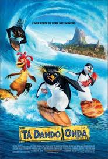
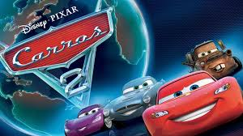
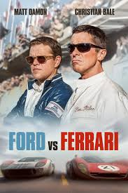
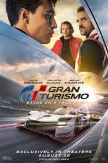

| Título do Filme | Link | Opinião | Capa |
|---|---|---|---|
| Ta dando onda | Assistir | Surfar é a atividade do pinguim adolescente Cody Maverick. Acompanhado por uma equipe de filmagem, ele deixa sua casa na Antárdida para ir à Ilha de Pen Gu participar do torneio Big Z Memorial Surf Off. Cody acredita que ganhando a competição terá o respeito e a admiração de todos. |  |
| Carros 2 | Assistir | O astro das corridas, Relâmpago McQueen, e o carro-guincho, Mate, viajam para disputar o primeiro Grand Prix Mundial, que irá revelar o carro mais veloz do planeta. Nessa jornada imperdível, Mate se envolve com um grupo de espionagem e vive grandes aventuras com seus amigos. |  |
| Ford vs Ferrari | Assistir | O projetista Carroll Shelby e o piloto Ken Miles enfrentam a interferência empresarial, as leis da física e os próprios demônios para construir um carro de corrida para a Ford derrotar a hegemonia de Enzo Ferrari nas 24 horas de Le Mans. |  |
| Gran turismo | Assistir | O jovem Jann Mardenborough vence uma série de competições do vídeo-game Gran Turismo, promovidas por uma grande empresa automobilística, e ganha a oportunidade de se tornar um piloto profissional. |  |